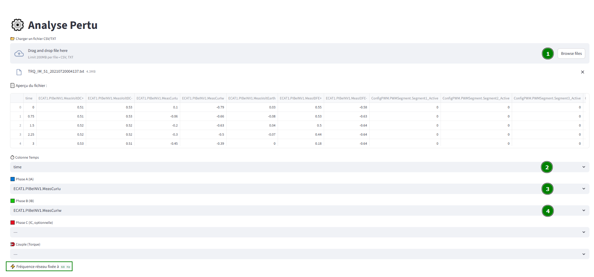
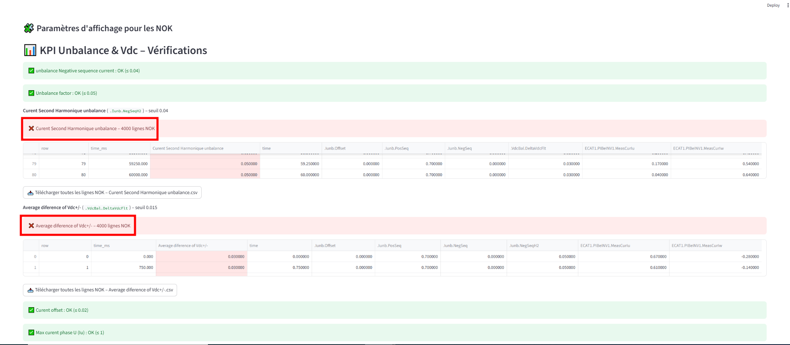
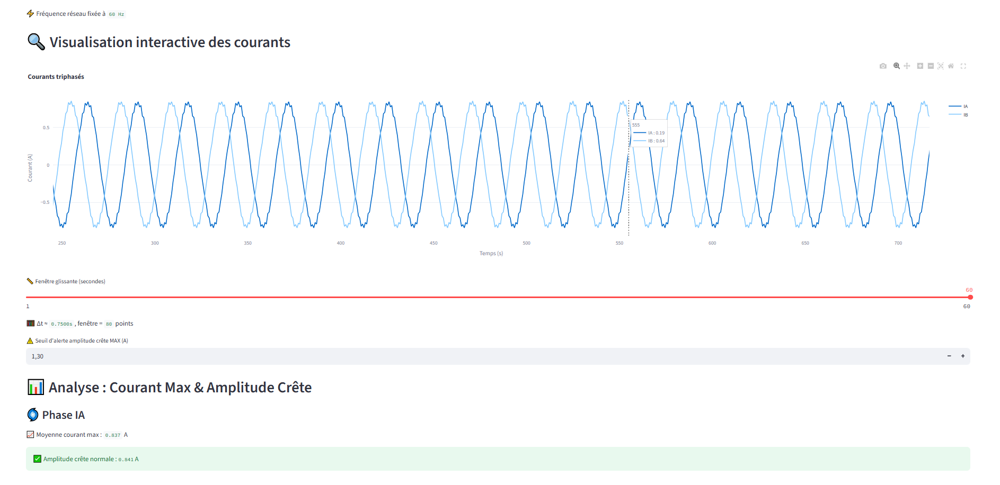
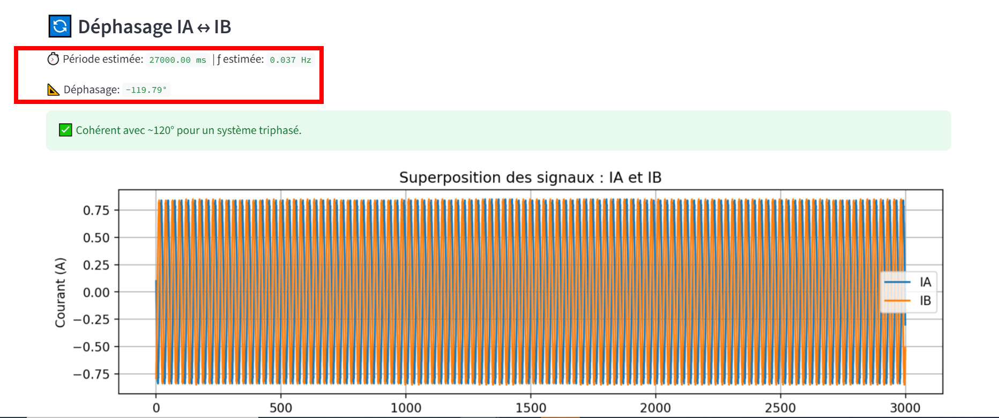

1. Objectif & Contexte C4 C5 C6

But : analyser les courants triphasés (IA/IB/IC) et le couple (Torque) pour suivre max, amplitude crête, déphasage et anomalies.
- Upload d’un fichier CSV/TXT (séparateur « ; »), dédoublonnage des noms de colonnes.
- Sélection des colonnes : Temps (obligatoire), IA, IB, IC (optionnelle), Torque (optionnelle).
- Fréquence fixée à 60 Hz pour la phase (FFT).
- Conversion numérique,
dropnaet tri par temps.
Stack : Python (NumPy/SciPy), Streamlit, Plotly & Matplotlib.
2. KPI Unbalance & Vdc – Sélection/Mappage & Vérifications C4

Sélection & mappage des colonnes :
- Recherche automatique des noms attendus (
.Iunb.PosSeq,.Iunb.Offset, etc.). - Si introuvable, affichage d’un sélecteur manuel pour choisir la colonne.
- Double jeu de données :
df_raw(affichage brut) etdf(numérique pour les calculs).
Affichage des lignes NOK :
- Affiche toutes les lignes NOK avec colonnes utiles (temps, KPI fautif, autres valeurs contextuelles).
- Ajoute
rowettime_ms(3 décimales). - Colore uniquement la cellule du KPI fautif.
- Injection possible de KPI calculés (ex.
Unbalance factor) avec format décimal dynamique. - Export CSV des lignes NOK par KPI.
Règles de vérification implémentées :
- NegSeq ≤ 0.04
- Unbalance factor = NegSeq / PosSeq ≤ 0.05
- NegSeqH2 ≤ 0.04
- Delta Vdc ≤ 0.015
- Curent offset ≤ 0.02
- Iu / Iw : max ≤ 1.0 et min ≥ -1.0
// Exemple : Unbalance factor
ratio = NegSeq / PosSeq
mask = ratio > 0.05
if mask.any():
show_fail_context(mask, "Unbalance factor", "_Unbalance factor", computed_series=ratio)
// Exemple : Curent offset
mask_off = Offset > 0.02
if mask_off.any():
show_fail_context(mask_off, "Curent offset", Offset)3. Comparaison de Pertu (Courants) C4

Courbes Plotly des courants IA/IB/IC sur tout le jeu de données conservé.
- Affichage des courants IA/IB/IC vs Temps.
- Fenêtre glissante (slider en secondes) → taille en points
wvia Δt médian. - Par phase :
{phase}_max(rolling max) et{phase}_amp(max |x| sur la fenêtre). - Moyennes de
{phase}_maxet{phase}_amp; statut vs seuil amplitude crête. - Graphiques Matplotlib par phase : signal, max roulant, amplitude crête.
// w via slider (s) et Δt médian
{phase}_max = rolling_max(signal, w)
{phase}_amp = rolling_max(abs(signal), w)
// Moyennes & statut par rapport au seuil_amp4. Déphasage (passages par zéro – sans fréquence imposée) & Anomalies vs Couple C4

Déphasage par passages par zéro (méthode robuste, sans 50/60 Hz imposé) :
- Détection des passages par zéro montants sur chaque phase, avec interpolation linéaire du temps exact.
- Estimation de la période T via la moyenne des intervalles entre zéros consécutifs (nettoyage des outliers par IQR).
- Pour chaque paire (IA‑IB, IB‑IC, IA‑IC) : on associe les zéros les plus proches et on calcule Δt.
- Angle : φ = ( Δt / T ) × 360°, repli dans [-180°, 180°]. Affichage ✅/⚠️ selon l’attendu (≈120°).
Anomalies amplitude vs torque (si torque sélectionné) :
amp_diff = diff(amp_crête_phase_ref)lissé (moyenne roulante, valeur absolue).torque_diff = diff(Torque)lissé (moyenne roulante, valeur absolue).- Anomalie si amp_diff > seuil ET torque_diff < (seuil% × |Torque|) (couple stable).
- Compteur d’anomalies + marquage visuel des points (Plotly).
// Déphasage par passages par zéro
x1 = signal_A - mean(signal_A)
x2 = signal_B - mean(signal_B)
tz1 = zeros_montants_interpolés(t, x1)
tz2 = zeros_montants_interpolés(t, x2)
T = mean_period(clean(diff(tz1)), clean(diff(tz2)))
for ti in tz1:
tj = zéro_de_x2_le_plus_proche_de(ti)
dt = wrap_to_0_T(tj - ti, T)
phi += 360 * dt / T
phi_deg = fold_to_pm180(mean_robuste(phi))
// Anomalies (si torque)
amp_diff = abs(rolling_mean(diff(amp_phase_ref), w))
torque_diff = abs(rolling_mean(diff(Torque), w))
flag = (amp_diff > thr_amp_diff) && (torque_diff < thr_torque% * abs(Torque))🚀 Roadmap Technique – Futur du Projet
🧠
Surveillance intelligente des capteurs
Application du Machine Learning pour analyser et anticiper les dérives de comportement.
- 🔌 Contacteurs / disjoncteurs : Clustering non supervisé pour apprendre le comportement normal. Détection d’anomalies si les cycles deviennent trop rapides.
- 💧 Capteur de pression : Modèles de régression (ex: LSTM) pour apprendre les cycles de remplissage et identifier les anomalies de type fuite ou comportement irrégulier.
- 🧪 Capteur de conductivité : Analyse temporelle de la dérive avec Isolation Forest. Une montée du seuil bas indique une cartouche dégradée.
- 🚰 Capteur de débit :
- Variation excessive → air dans le circuit (analyse statistique).
- Baisse progressive → régression linéaire pour détecter fuite ou usure pompe.
- Corrélation avec pression pour croiser les données et renforcer l’interprétation.
🛠️
Maintenance préventive et prédictive
Basé sur l’historique d’utilisation et les cycles d’activité terrain.
- ⏱️ Compteurs d’usure : Suivi précis du nombre de cycles, temps de fonctionnement et ouvertures/fermetures de contacteurs, y compris arrêts sur
trip. - 🤖 Modélisation prédictive : Utilisation de modèles de classification comme Random Forest et SVM pour prédire les pannes potentielles à venir.
- 📐 Seuils dynamiques : Calculs adaptatifs par moyenne glissante et écart-type pour détecter des dérives subtiles non visibles avec un seuil fixe.
- 📊 Interface enrichie : Visualisation graphique, timeline, marquage des anomalies, export CSV, et filtres dynamiques pour faciliter l’analyse terrain.